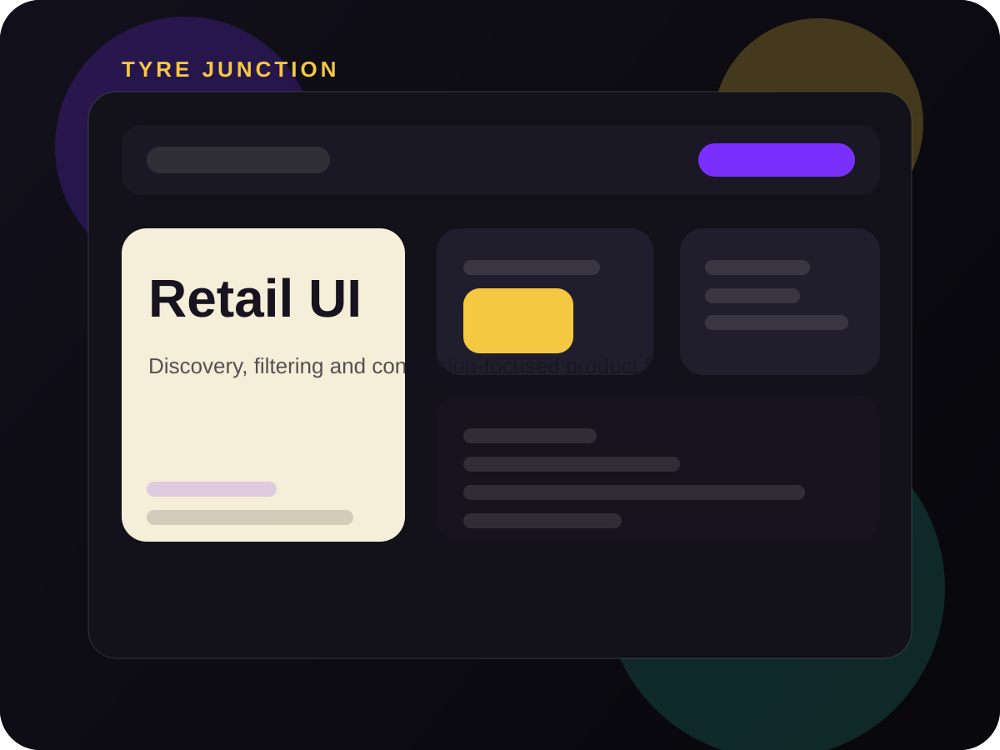

Challenge
Automotive storefronts usually feel dense and overly technical. The brief was to make product selection easier without dumbing down the information.
A product-first storefront concept for the automotive segment, focused on fast catalogue scanning, high-trust buying cues and smoother lead capture for buyers who compare before they commit.

Automotive storefronts usually feel dense and overly technical. The brief was to make product selection easier without dumbing down the information.
The result is a sharper buying flow with cleaner visual structure, better information rhythm and a more premium feel for a practical commerce use case.